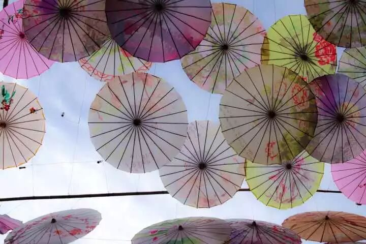
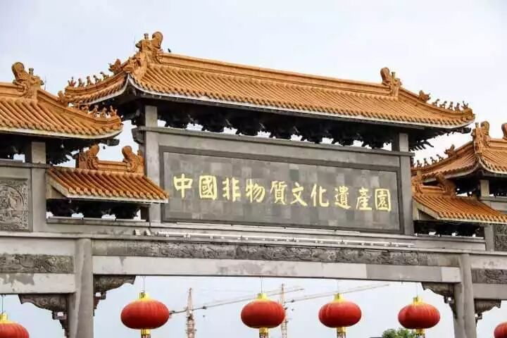
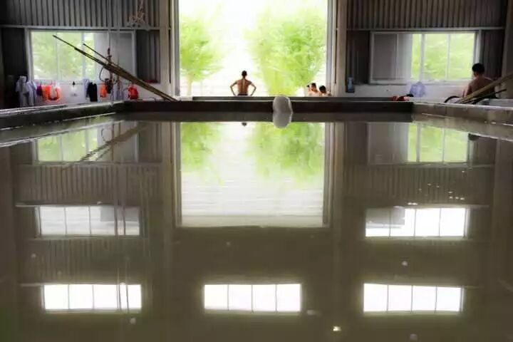

【素笺寄情·三】八月是行者的

【素笺寄情·三】八月是行者的
我以为，徽文化是以黄山为主立起来的旅游文化，是山的记载与水的传承。这一刻板的印象根植我的脑海整整18年，也不曾去认真了解过，就随他错着。直到这一期的行者无疆，真正亲身走进了水墨的安徽，我才意识到徽文化它本身的真正的含义。

它不像细腻温婉的江南，每一片落花都表露着小桥流水般的静谧；它也不像张家界的神秘，奇山异石加上少数民族文化的交织给人以无限的敬畏。徽文化更像是一幅枯色调的水墨画，整张画布上除了黑色便只剩下了那张老宣纸因为岁月而沾染的枯黄以及杂质。但是其味道却远不止色彩那么简单，宛若一坛陈酿的好酒，愈品愈醇，愈淳愈久。

行程的首站我们来到了安徽的省会合肥，避过了省城的繁华，直接驱车赶到远在郊区的中国非物质文化遗产园。说是非物质文化遗产园，但其给我的感觉却更像是借着文化的由头建立的一座小型游乐园，园内工作人员对非遗文化的热情不高，甚至对我们文化调研的目的有着部分的不解。我相信不顾旅途艰辛来到这里的游客必定是对文化有着一定的执念，当展现在他们眼前的是被利益蒙蔽双眼而建立起来的一座现代化的圈钱儿童乐园时，心中的感受并不是失望二字所能概括的。冒着滂沱的大雨一个多小时的车程所见到的非遗文化遗产园，不是我想象中的样子。

行程的第二站我们拜访了远在泾县深山里的中国宣纸文化园，最令人震撼的并不是各类精致的宣纸成品，而是整个宣纸制作工艺。作为在城市中成长起来的一代人，我们对于基础制作工艺的了解本身就少之又少，更何况是几千年传统的宣纸制作工艺了。在这个机械化流水线的年代见到这些纯手工的老工艺则更显得格外珍贵了。更有幸的是我们得到了宣纸制作工坊在这工作了近20年的一位老匠人的采访机会，他耐心的解答了我们对于宣纸制作工艺历史的各种问题，还向我们讲解了当地徽文化的发展历史。前一天在合肥非遗文化遗产园失望的心在这重新捡回了希望，社会的浮躁并没有让所有人都忘记了文化的意义而一昧追逐利益，总有那么一小部分人坚持着本心，以本真的热爱啊，守护着文化的底线。
在黄山，我们领略了世界文化遗产宏村的美丽景观，其典型的徽派建筑，粉墙黛瓦，马头墙都如同水墨画一样，屯溪老街的各种徽州菜也是十分好吃，其具有特色的臭鲑鱼、毛豆腐，还有黄山小茶饼都是值得品尝。 但让人觉得惋惜的就是随着现代化的不断推进，许多古城已完全成为一个打着古城的名号却以盈利为目的的商业街，徽州古城里的现代化建筑实在是让人惋惜。

这一路是辛苦的一路，我们走了三座城市，坐了几十小时的火车与汽车，这一路又是幸运的一路，不仅了解了真正的徽文化，还遇见了如此多真正用心去守护浮躁社会中那最后一亩方塘的匠人，你们是平凡的，你们是伟大的。
七月是炽热的；八月，是行者的。


图片：沈华，盛暘
文字：盛暘
排版：潘雯雯
审核：应雨珊，潘雯雯